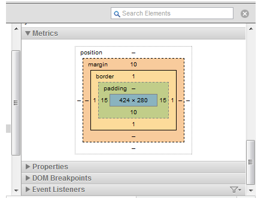

Margin Border and Padding
6/21/15
When styling with CSS it is helpful to understand the box model.
You have a content box, which is surrounded by a padding box, which is surrounded by a border box which is surrounded by a margin box.
The content is the HTML element that you want to appear on your page. For simplicity sake let’s think of it as a picture or piece of art. It’s what you want to display.
Padding is the space between the content and its border. You can add as much space around the content as you like, but keep in mind it will add to the total size of the element. Think of it as the matting around the art.
The border is a border that goes around the padding of an element. Think of it as the picture frame. It is not space, but an actual border that you can style. You can adjust the color, thickness, straight line solid line, no line. You name it. Anything inside of the border is part of the element you are styling, anything outside of the border is not.
The margin is the transparent space around your element’s border. You can adjust the margin to control the way your element is displayed in relation to other elements on your page. Think of it as the wall you are hanging your painting from.